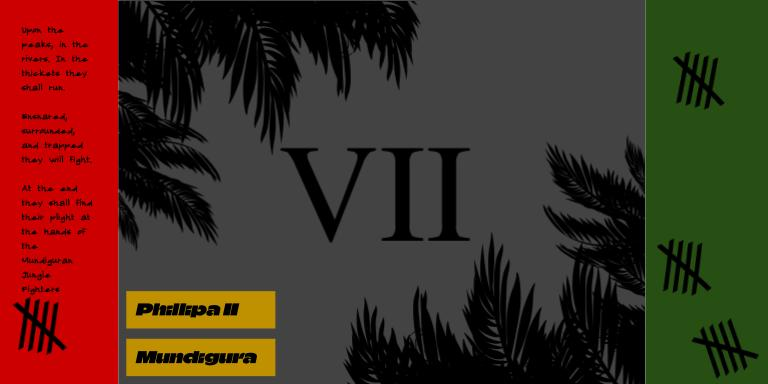
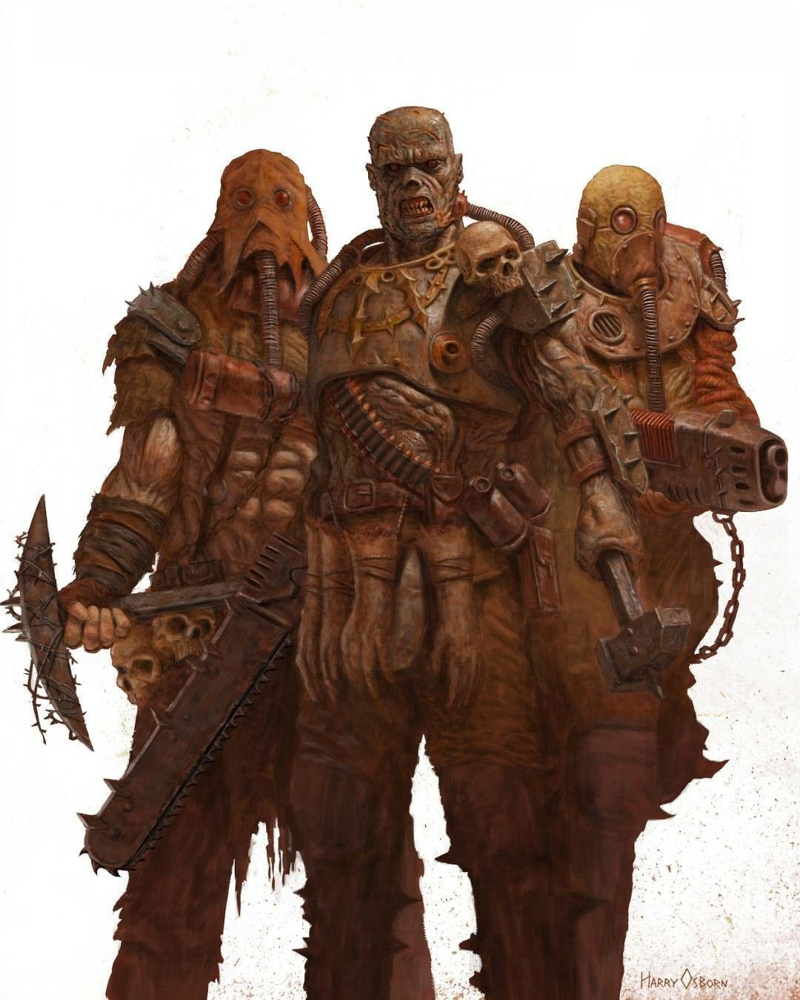
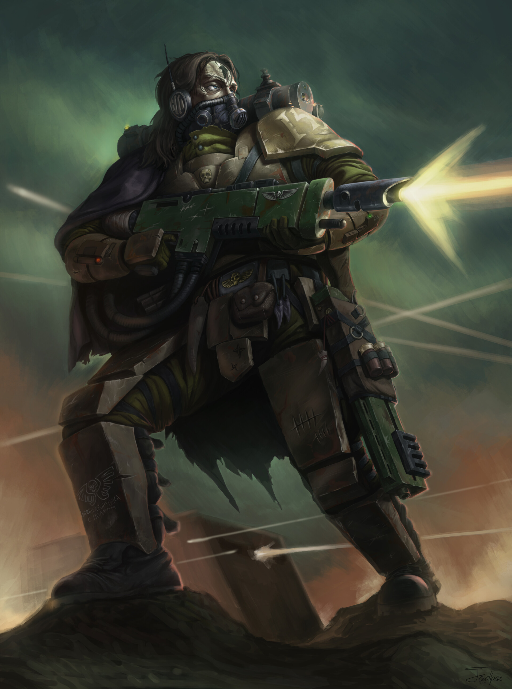
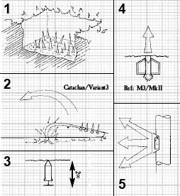
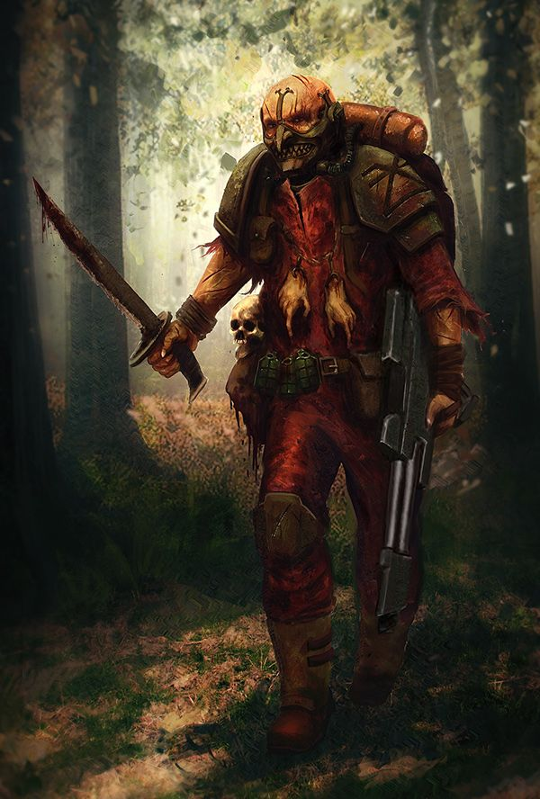

The world of Mundigura is a rough place, a central ring of arid desert lies in the midst of two massive jungles spanning from either poles of Mundigura to the meridians. Here is where the tough and mighty Mundiguran Jungle fighters would spur their heretical revolution against the Imperium of Man. Here is where four full regiments of the foul traitors would escape from the main capital city and sow havoc amongst the stars for centuries to come. The Mundigura Jungle Fighters have very little standardization, what they do have is the ability to survive and forage in the harshest of climates and a strong knowledge of traps. It is this regiment that would fully outmaneuver the Fengorn Mobile Infantry during the Mundigura Jungle Wars, who would force the proud Vostroyan firstborn to come fight in the mud with them. It is this regiment that would kill a full regiment of Khagan Jungle Warriors during the early years of the Jungle Wars. This one regiment achieved so much off of so little. Traitors and heretics in these eyes of the Imperium, but plucky and resourceful all the same. Made up majoritively of crazed cultists the Mundiguran Jungle Fighters often have a knack for throwing their opponent off with massed infantry charges followed up by precision blade Jungle Fighters ambushing in the dark and shocking an opponent into panic.

The Mundiguran Jungle Fighters are famed for their ability to field a lot of cheap rabbles of manpower effectively in rough and arid environments. It is not all too true to say that the core of the Mundiguran Jungle Fighters aren't still resourceful and make for good jungle fighters—well of course not! However... to put it mildly, as kindly as possible, sanity is not high on the priority list for recruits in the Mundiguran Jungle Fighters. Those who prove themselves and get placed in the elite corps of the Jungle Fighters tend to be there because they have shown the skills of the warrior-survivor culture that is much valued in the ranks of the Jungle Fighters. A battle against the Mundiguran Jungle Fighters is an exhausting endeavor. Shelled by artillery, ambushed by snipers, running over all manner of traps, and swamped by cultists and fanatics—only after all of that does the main force start pushing through the ranks of cultists. Suddenly a force may find themselves surrounded, or pinned by a Bolter nest they did not see up on a hilltop. However, just as quickly as combat could start, it could end. The Mundiguran Jungle Fighters might commit one or two squads to an ambush and then fade into the underbrush.
When facing the Mundiguran Jungle Fighters it is often the case that if they are left unchecked for too long they may start recruiting from local population centers or setting up tunnels and hardpoints amongst an area of wildlands. This leads a commander facing the prospect of fighting the Jungle Fighters to act too hasty and to commit too much to an immediate decapitating strike. In the process finding they are outmatched, outmaneuvered, or outplayed. A commander who is left unaware of the Mundiguran Jungle Fighters knack for growing in numbers and strength may find themselves fighting ever constantly; hill by hill, tunnel by tunnel, clearing by clearing, and thicket by thicket. It is an exhausting endeavor and very few have truly been able to nail down the Jungle Fighters.

The Toe Popper
A pressure plate placed under a bolt round so that when stepped on the victim's leg or foot is shredded by a mass reactive anti-infantry and light armor piercing round.
The Punji Spikes
Primitive and effective, the Mundiguran Jungle Fighters will place spikes made of root tree shoots or scrap metal and place a weak and unsupported base matching the jungle floor over it. When a victim steps over it they are dropped into the trap and eviscerated.
The Humble Tripwire
A line set across a tree line connected to a high explosive grenade or explosive that shreds the victim with shrapnel.


The Mundigura Jungle Fighters scattered across the Imperium post Jungle War and continue to operate and grow in many heretical wars across the galaxy. A full regiment of Mundiguran Jungle Fighters has been spotted operating with the Night Lords Chaos Renegade Space Marines in the Ghoul Stars region of space. Mundiguran Jungle Fighters have a notable warband led by the former planetary defense force general. As the ranks have swelled and taken casualties again and again the regiment itself is nearly unrecognizable in its origins as a professional defensive force. Instead, it is a terrifying tapestry of crazed mutants and brigands. Utterly devoid of souls and pity these warriors move across the Imperium ransacking and looting whatever they can get their hands on.